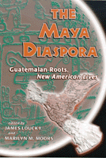

<body bgcolor="#FFFFFF" text="#000000" link="#0000FF" vlink="#CC0000" alink="#CC0000"><center><hr width="350" size="1" align="center" noshade>How Maya refugees found new lives in strange lands<hr width="350" size="1" align="center" noshade><p><a href="https://cdcshoppingcart.uchicago.edu/Cart/ChicagoBook.aspx?ISBN=9781566397940&&PRESS=temple" target="_top">Buy this book!</a> | <a href="https://cdcshoppingcart.uchicago.edu/Cart/Cart.aspx?PRESS=temple" target="_top">View Cart</a> | <a href="https://cdcshoppingcart.uchicago.edu/Cart/Cart.aspx?PRESS=temple" target="_top">Check Out</a></p><p></p></center><!--none//--><h1>The Maya Diaspora</h1>
<H2>Guatemalan Roots, New American Lives</H2>
<h3>edited by James Loucky and Marilyn M. Moors</h3>
<P>cloth 1-56639-794-4 $85.50, Oct 00, <FONT COLOR=#990033>Available</FONT>
<br>paper 1-56639-795-2 $31.95, Oct 00, <FONT COLOR=#990033>Available</FONT>
<br>Electronic Book 1-43990-122-8 $31.95 <FONT COLOR=#990033>Available</FONT>
<BR> 248 pp
6x9
6&nbsp;tables 5&nbsp;map(s) 11&nbsp;figures
</P><BLOCKQUOTE><I>"This fine collection of 16 essays explores many different aspects of that exodus from Guatemala."</I>
<br>&#151<b><I>Choice</I></b><I></I></BLOCKQUOTE>
<p>Maya people have lived for thousands of years in the mountains and forests of what is now Guatemala, but they lost control of their land and became serfs and refugees when the Spanish conquered them in the sixteenth century. Under both the Spanish and the Guatemalan non-Indian elites, they suffered enforced poverty and thereby served as a resident source of cheap labor for non-Maya projects, particularly agricultural production. Following the CIA-induced coup that toppled Guatemala's elected government in 1954, their misery was exacerbated by government accommodation to United States' "interests," which promoted crops for export and reinforced the need for a source of cheap and passive labor.
<p>This widespread poverty was most intense in northwestern Guatemala, where 80 percent of Maya children were chronically malnourished, and forced a continuing migration to the Pacific coast. The self-help aid that flowed into the area in the 1960s and 1970s raised hopes for justice and equity that were brutally suppressed by Guatemala's military government. This military reprisal led to a massive diaspora of Maya throughout Canada, the United States, Mexico, and Central America.
<p>This collection describes that process and the results. The chapters show the dangers and problems of the migratory/refugee process and the range of creative cultural adaptations that the Maya have developed. It provides the first comparative view of the formation and transformation of this new and expanding transnational population, presented from the standpoint of the migrants themselves as well as from a societal and international perspective. Taken together, the chapters furnish unique and ethnographically grounded perspectives on the dynamic implications of uprooting and resettlement, social and psychological adjustment, long-term prospects for continued links to a migration history from Guatemala, and the development of a sense of co-ethnicity with other indigenous people of Maya descent. As the Maya struggle to find their place in a more global society, their stories of quiet courage are representative of many other ethnic groups, migrants, and refugees today.
<BR>&nbsp;<h2>Excerpt</h2><P>Excerpt available at <a href="http://www.temple.edu/tempress">www.temple.edu/tempress</a></p>
<BR>&nbsp;<h2>Reviews</h2>
<p>Read a <a href="../authors/1539_review.pdf">review</a> from <I>The Journal of American Ethnic History</I>, Winter 2002, written by Roger L. Nichols (pdf).
<BR>&nbsp;<h2>Contents</h2><P>
<p>Acknowledgments
<br>1. The Maya Diaspora: Introduction &#150 James Loucky and Marilyn M. Moors
<br>2. Survivors on the Move: Maya Migration in Time and Space &#150 Christopher H. Lutz and W. George Lovell
<br>3. Flight, Exile, Repatriation, and Return: Guatemalan Refugee Scenarios, 1981-1998 &#150 Catherine L. Nolin Hanlon and W. George Lovell
<br>4. Space and Identity in Testimonies of Displacement: Maya Migration to Guatemala City in the 1980s &#150 Antonella Fabri
<br>5. Organizing in Exile: The Reconstruction of Community in the Guatemalan Refugee Camps of Southern Mexico &#150 Deborah L. Billings
<br>6. Challenges of Return and Reintegration &#150 Clark Taylor
<br>7. A Maya Voice: The Maya of Mexico City &#150 Domingo Hernández Ixcoy
<br>8. Becoming Belizean: Maya Identity and the Politics of Nation &#150 Michael C. Stone
<br>9. La Huerta: Transportation Hub in the Arizona Desert &#150 Nancy J. Wellmeier
<br>10. Indiantown, Florida: The Maya Diaspora and Applied Anthropology &#150 Allan F. Burns
<br>11. A Maya Voice: The Refugees in Indiantown, Florida &#150 Jerónimo Camposeco
<br>12. The Maya of Morganton: Exploring Worker Identity within the Global Marketplace &#150 Leon Fink and Alvis Dunn
<br>13. Maya Urban Villagers in Houston: The Formation of a Migrant Community from San Cristóbal Totonicanpán &#150 Nestor P. Rodríguez and Jacqueline Maria Hagan
<br>14. A Maya Voice: Living in Vancouver &#150 Zoila Ramirez
<br>15. Maya in a Modern Metropolis: Establishing New Lives and Livelihoods in Los Angeles &#150 James Loucky
<br>16. Conclusion: The Maya Diaspora Experience &#150 Marilyn M. Moors
<br>Epilogue: Elilal/Exilio &#150 Victor D. Montejo
<br>References
<br>About the Contributors
<br>Index
</P><BR>&nbsp;<H2>About the Author(s)</H2>
<P><B>James Loucky</B> is a Professor teaching anthropology, Latin American studies, and international studies at Western Washington University.</P>
<P><b>Marilyn M. Moors</b> is Professor emerita from Montgomery College, National Coordinator of the Guatemala Scholars Network, and an adjunct professor teaching anthropology and gender at Frostburg State University.</P>
<P>Contributors: Deborah Billings, Allan F, Burns, Jerónimo Camposeco, Alvis Dunn, Antonella Fabri, Leon Fink, Jacqueline Hagan, Catherine L. Nolin Hanlon, Domingo Hernández Ixcoy, Christopher H. Lutz, W. George Lovell, Victor D. Montejo, Zoila Ramirez, Nestor P. Rodriquez, Michael C. Stone, Clark Taylor, Nancy J. Wellmeier, and the editors.</P>
<BR><H2>Subject Categories</H2>
<p><A HREF="/tempress/race.html" TARGET="_top">Race and Ethnicity</a>
<BR><A HREF="/tempress/latin.html" TARGET="_top">Latin American/Caribbean Studies</a>
</p>
<p align="center"><a href="https://cdcshoppingcart.uchicago.edu/Cart/ChicagoBook.aspx?ISBN=9781566397940&&PRESS=temple" target="_top">Buy this book!</a> | <a href="https://cdcshoppingcart.uchicago.edu/Cart/Cart.aspx?PRESS=temple" target="_top">View Cart</a> | <a href="https://cdcshoppingcart.uchicago.edu/Cart/Cart.aspx?PRESS=temple" target="_top">Check Out</a></p><p><font face="Arial" size="1"><a href="copyright.html" onMouseOver="window.status='Web Copyright Policy';return true;" onMouseOut="window.status=''" title="Web Copyright Policy">&copy;</a> 2015 <a href="http://www.temple.edu" target="new" onMouseOver="window.status='Link to Temple University home page';return true;" onMouseOut="window.status=''" title="Link to Temple University home page">Temple University</a>. All Rights Reserved. http://www.temple.edu/tempress/titles/1539_reg.html</font></p>